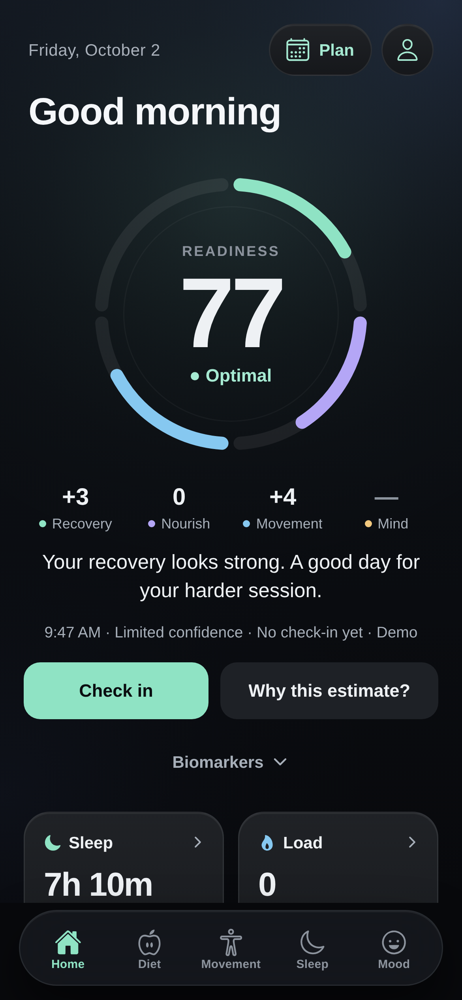
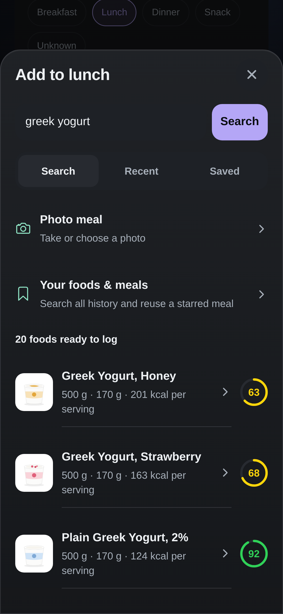
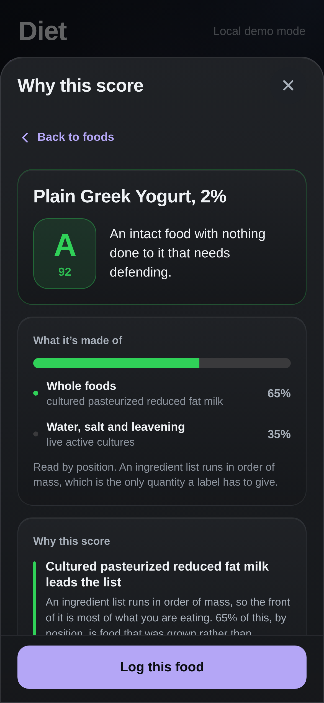
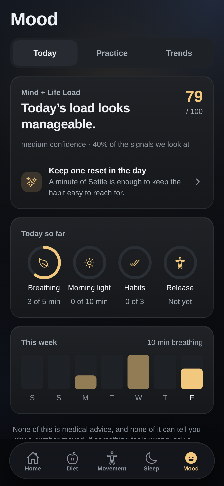

Sleep.
Food.
Movement.
Mind.
It’s all
CONNECTED.
Woven into
One
Day.

One score
Every
morning.
See what’s
behind it.
Food.


Search
any food.
Tap
the score.
See
why.
What it’s
made of.
Sleep.

Know
your peak.
Plan
around it.
Mind.

One reset
that fits.
Small
resets
add up.
Sleep.
Food.
Movement.
Mind.
daywoven
YOUR WHOLE DAY, WOVEN TOGETHER.